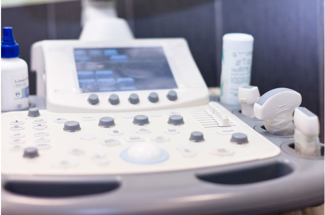
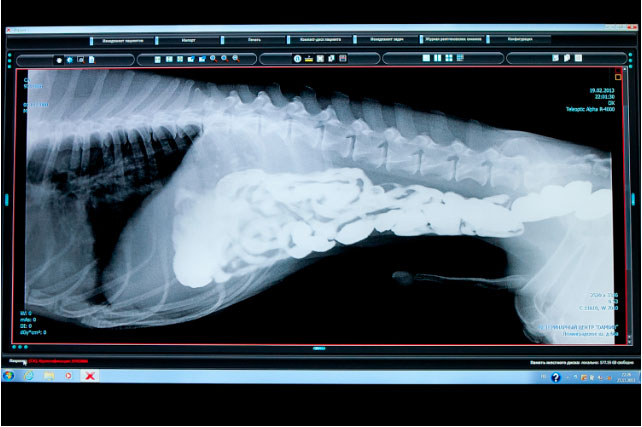
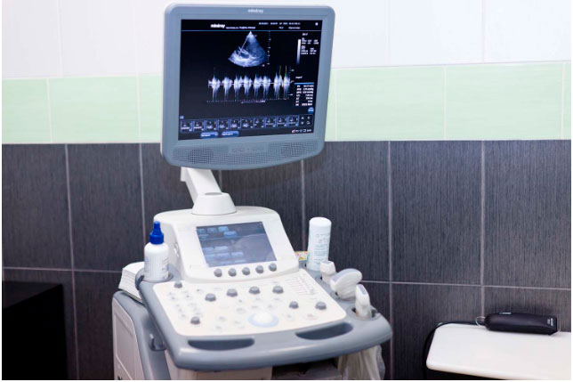
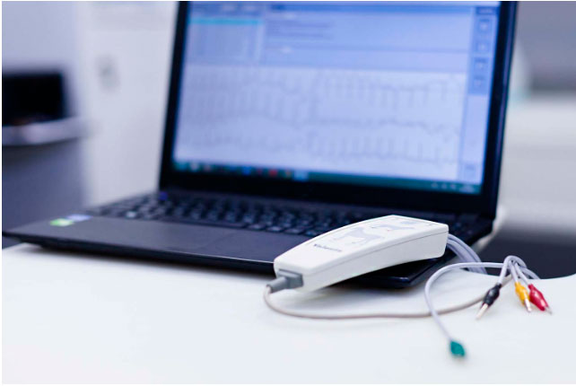
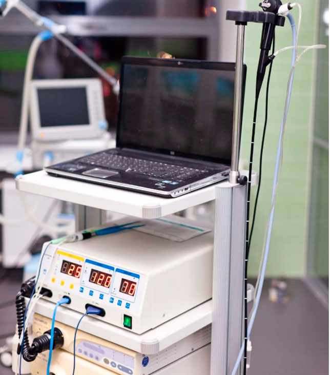

<!DOCTYPE html>
<html lang="ru">
<head>
    <meta charset="UTF-8">
    <meta name="viewport" content="width=device-width, initial-scale=1.0">
    <title>Equipment</title>
    <link rel="stylesheet" href="css/main.min.css">
</head>
<body>
    <div class="wrapper">
        <header class="header">
            <div class="container container--flex container--align-center">
                <a href="/" class="logo header__logo">
                     
                 </a>
                 <nav class="menu header__menu">
                     <ul>
                         <li><a href="#">О центре</a></li>
                         <li><a href="#">Наши врачи</a></li>
                         <li><a href="#">Услуги</a></li>
                         <li><a href="#">Цены</a></li>
                         <li><a href="#">Акции</a></li>
                         <li><a href="#">Наши пациенты</a></li>
                         <li><a href="#">Фото центра</a></li>
                         <li><a href="#">Контакты</a></li>
                     </ul>
                     <div class="call-block call-block--adaptive header__call-block">
                        <a href="tel:+74955006060" class="number number--blue call-block__number">+7 495 500 60 60</a>
                        <button class="button button--blue call-block__button">Записаться на приём</button>
                    </div>
                 </nav>
                 <div class="call-block header__call-block">
                     <a href="tel:+74955006060" class="number number--blue call-block__number">+7 495 500 60 60</a>
                     <button class="button button--blue call-block__button">Записаться на приём</button>
                 </div>
                 <button class="nav-toggle">
                    <span class="bar-top"></span>
                    <span class="bar-mid"></span>
                    <span class="bar-bot"></span>
                  </button>
            </div>
        </header>
        <main class="main">
            <div class="breadcrumbs">
                <nav class="container container--mini-p">
                    <ul class="breadcrumbs__list">
                        <li class="breadcrumbs__item"><a href="#" class="breadcrumbs__link">Главная</a></li>
                        <li class="breadcrumbs__item"><a href="#" class="breadcrumbs__link">О центре</a></li>
                        <li class="breadcrumbs__item"><span class="breadcrumbs__link breadcrumbs__link--last">Оборудование</span></li>
                    </ul>
                </nav>
            </div>
            <!--equipment-->
            <div class="equipment">
                <div class="page-title page-title--blue">Оборудование</div>
                <div class="equipment__row">
                    <div class="equipment__item">
                        <a  href="images/equipment/1.jpg" data-fancybox class="equipment__item-img-container">
                            
                        </a>
                        <div class="equipment__text-container">
                            <div class="equipment__item-title">УЗИ</div>
                            <p>
                                Ультразвуковая диагностика это простой, современный, безболезненныйи практически не требующий никакой специальной подготовки метод исследования, позволяющий рассмотреть структуру внутренних органов вашего питомца «изнутри».Для диагностики некоторых заболеваний мочевыделительной и половой систем этот метод является ведущим. Благодаря УЗИ можно уточнить процессы, происходящие в организме животного при том или ином заболевании и скорректировать продолжительностьи интенсивность лечения. <br>
                                <br>
                                В нашей клинике благодаря современному ультразвуковому оборудованию экспертного уровня и датчикам высокой плотности с доплером можно провести ультразвуковое исследование органов брюшной и грудной полости (сердце и легкие), сосудистого русла, оценить сердцебиение плодов у беременных животных в любой день.
                            </p>
                        </div>
                    </div>
                    <div class="equipment__item">
                        <a  href="images/equipment/2.jpg" data-fancybox class="equipment__item-img-container">
                            
                        </a>
                        <div class="equipment__text-container">
                            <div class="equipment__item-title">Рентгенографическое обследование <br> (рентген)</div>
                            <p>
                                Рентген - один из наиболее часто используемых методов исследования при работес животными. Этот безболезненный вид обследования незаменим для диагностики большого числа патологий и заболеваний, например, заболеваний желудочно-кишечного тракта, новообразований, травм, заболеваний дыхательной системы и скелета. <br>
                                <br>
                                В нашей клинике рентгенография осуществляется при помощи высокотехнологичного цифрового рентгеновского аппарата, позволяющего производить тонкую настройку индивидуально для каждого животного, с минимальной лучевой нагрузкой на организм.Это позволяет проводить рентгенографию как самым маленьким, так и гигантским породам собак. <br>
                                <br>
                                Цифровая обработка снимков позволяет быстро (10-15 секунд) получить на дисплее монитора высококачественные и информативные рентгенографические изображения, которые сохраняются в электронном архиве клиники. По желанию владельца животного снимки предоставляются на электронном носителе (CD-R диск). <br>
                            </p>
                        </div>
                    </div>
                    <div class="equipment__item">
                        <a  href="images/equipment/3.jpg" data-fancybox class="equipment__item-img-container">
                            
                        </a>
                        <div class="equipment__text-container">
                            <div class="equipment__item-title">ЭХО-КГ</div>
                            <p>
                                Эхокардиография - безопасный и безболезненный метод исследования строения сердцаи окружающего его пространства при помощи ультразвука. Данный метод позволяет выявлять врожденные и приобретенные пороки сердца, обследовать размеры сердца и его полостей(камер), строение сосудов и клапанного аппарата. Это второй по важности метод кардиологического обследования после ЭКГ, неоценимо дополняющий его. ЭХО-КГ абсолютно безопасна и может выполняться столько раз, сколько это необходимо. Специальной подготовки животного для проведения ЭХО-КГ не требуется.Вся процедура занимает 20-40 минут.
                            </p>
                        </div>
                    </div>
                    <div class="equipment__item">
                        <a  href="images/equipment/4.jpg" data-fancybox class="equipment__item-img-container">
                            
                        </a>
                        <div class="equipment__text-container">
                            <div class="equipment__item-title">ЭКГ</div>
                            <p>
                                Электрокардиография - это недорогой, простой и ценный метод, позволяющий получить важную информацию о работе сердца, выявить широкий спектр кардиологических заболеваний на различных стадиях и предотвратить их возможное развитие при наличии предрасположенности организма животного. ЭКГ входит в список обязательных исследований при кардиологическом обследовании (наряду с рентгеноскопией, ЭХО-КГ лабораторными исследованиями). Кардиологическое обследование сердца также необходимо выполнять в предоперационный период для выяснения степени анестезиологического риска. <br>
                                <br>
                                ЭКГ в нашей клинике осуществляется с помощью специализированного компьютерного ветеринарного электрокардиографа. Данная процедура абсолютно безболезненнадля животного. К коже Вашего питомца приклеиваются специальные электроды, после чего происходит регистрация электрокардиограммы на компьютер и последующая ее расшифровка. Специальной подготовки животного для проведения ЭКГ не требуется.Вся процедура занимает 10-20 минут.
                            </p>
                        </div>
                    </div>
                    <div class="equipment__item">
                        <a  href="images/equipment/5.jpg" data-fancybox class="equipment__item-img-container">
                            
                        </a>
                        <div class="equipment__text-container">
                            <div class="equipment__item-title">Эндоскопия</div>
                            <p>
                                Это современный метод исследования и проведения хирургических операций, широко распространенный в «человеческой» медицине и все больше набирающий популярностьв ветеринарии. Благодаря данному методу можно проводить операции (в том числе стерилизацию) животным не через большой разрез, а через маленькие дырочки на животе, вследствие чего время операции сокращается, практически нет кровотечения, и период восстановления после эндоскопической операции значительно меньше в отличиеот обычной операции. <br>
                                <br>
                                Например, удаление инородных предметов из желудка с помощью эндоскопа занимает 15-20 мин, и, в сравнении со стандартной операцией на желудке, на следующий день Ваш питомец уже ведет обычный образ жизни вместо длительного реабилитационного периода, включающего трехдневную голодную диету, длительные капельницы и антибиотикотерапию, пребывание в отделении интенсивной терапии в течении несколько дней, а так же последующее длительное диетическое кормление. В нашей клинике благодаря современному эндоскопическому оборудованию можно провести любое эндоскопическое исследование (включая гастроскопию и артроскопию) и операцию высокой степени сложности. <br>
                            </p>
                        </div>
                    </div>
                </div>
            </div>
        </main>
        <footer class="footer">
            <div class="container container--flex container--align-center container--space-between container--flex-wrap">
                <a href="/" class="logo footer__logo">
                    
                </a>
                <a href="tel:+749550060Ф60" class="number number--white footer__number">+7 495 500 60 60</a>
                <button class="button button--white footer__button">Записаться на приём</button>
                <nav class="menu footer__menu">
                    <ul>
                        <li><a href="#">О центре</a></li>
                        <li><a href="#">Наши врачи</a></li>
                        <li><a href="#">Услуги</a></li>
                        <li><a href="#">Цены</a></li>
                        <li><a href="#">Акции</a></li>
                        <li><a href="#">Наши пациенты</a></li>
                        <li><a href="#">Фото центра</a></li>
                        <li><a href="#">Контакты</a></li>
                    </ul>
                </nav>
            </div>
        </footer>
        <!-- button-up-->
        <div class="button-up">
            <div class="button-up__container">
                <div class="button-up__icon">

                </div>
                <p class="button-up__text">
                    Наверх
                </p>
            </div>
        </div>
    </div>
    <script src="https://ajax.googleapis.com/ajax/libs/jquery/3.4.1/jquery.min.js"></script>
    <script src="js/libs.min.js"></script>
    <script src="js/main.js"></script>
</body>
</html>